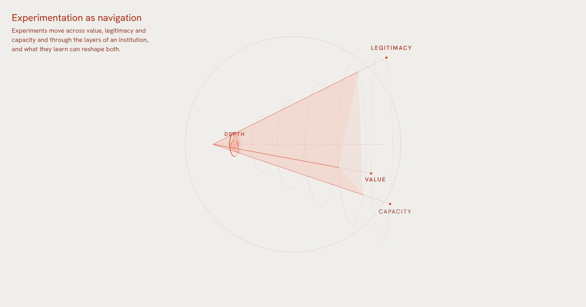
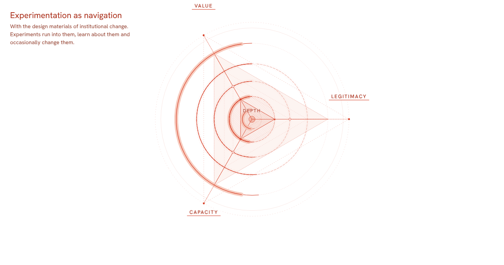
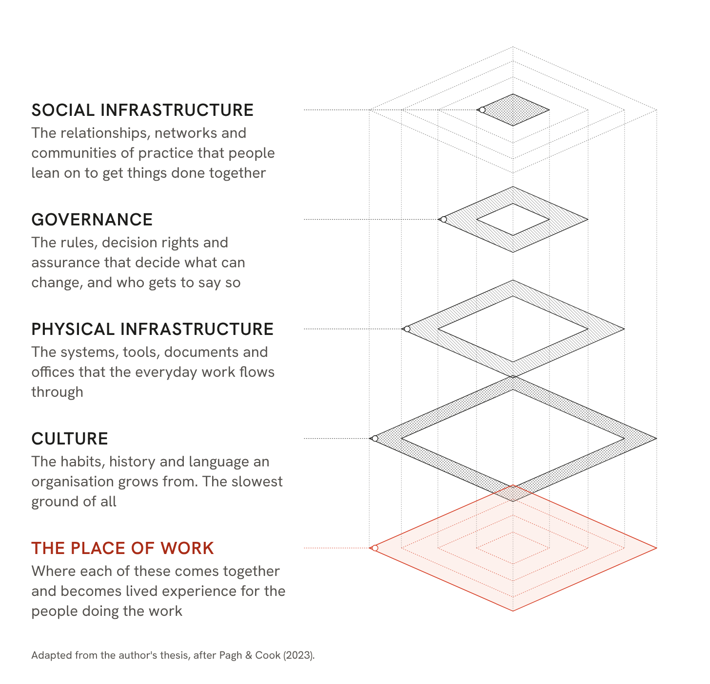

-

Experimentation as navigation
Spin an experiment across value, legitimacy and capacity, and through the layers of an institution.
Tasting the organisational treacle
-

Navigation with materials
The navigation model with the design materials an experiment runs into, from legislation to review cycles, and what changing them would take.
Tasting the organisational treacle
-

An organisation is a place too
An organisation drawn as five layers, the same layers a neighbourhood has, in different material.
Tasting the organisational treacle